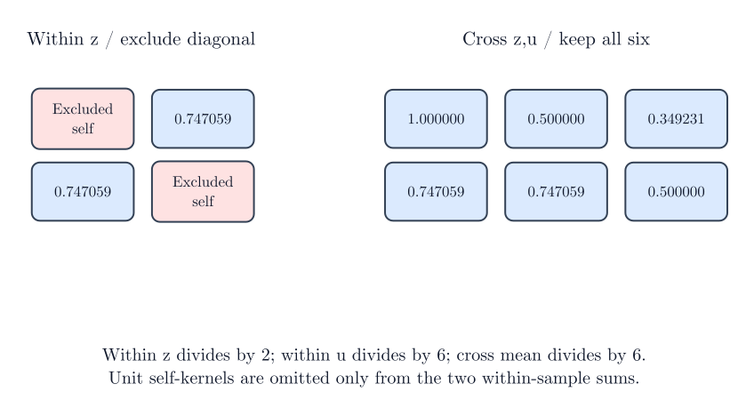
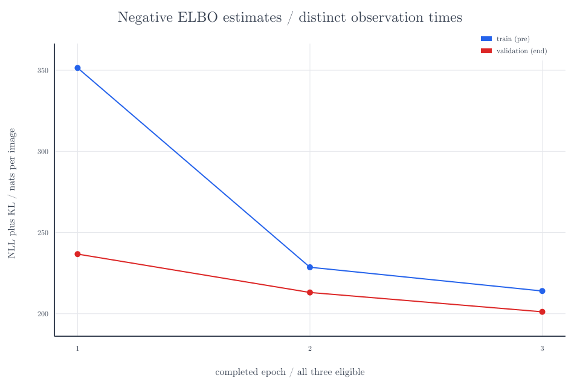
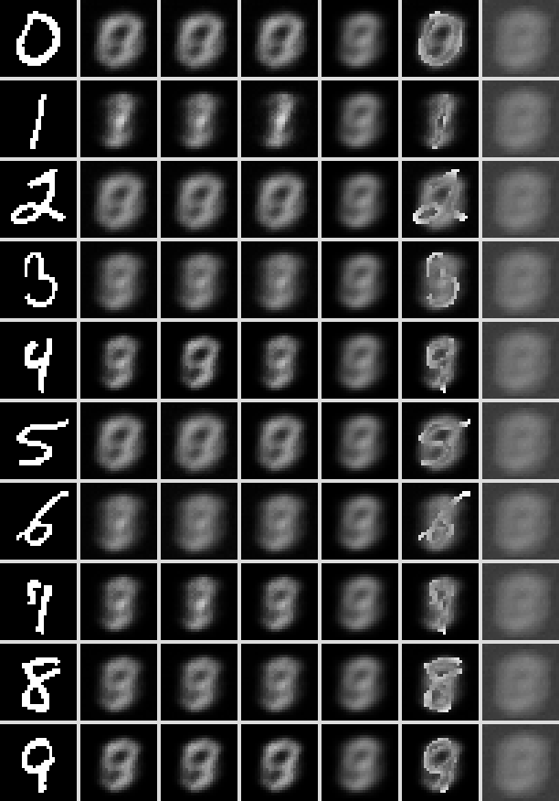
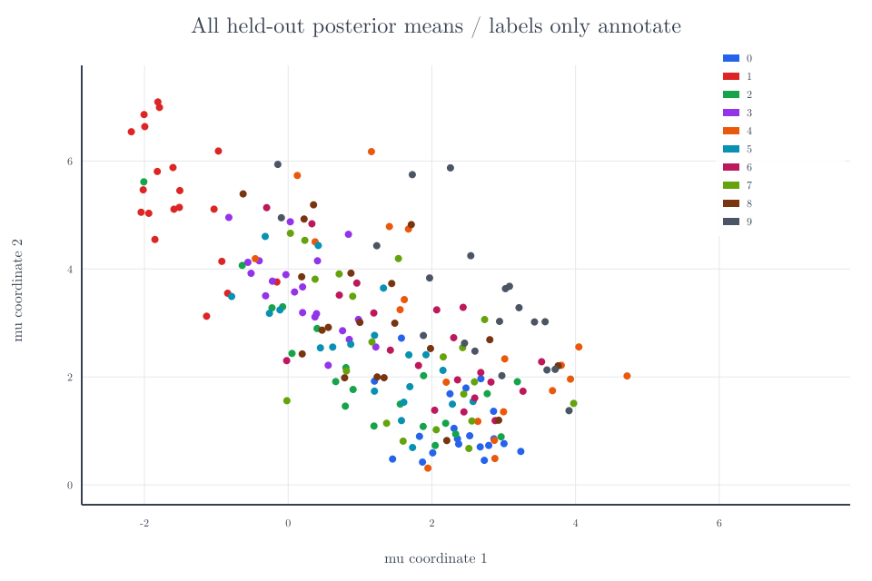
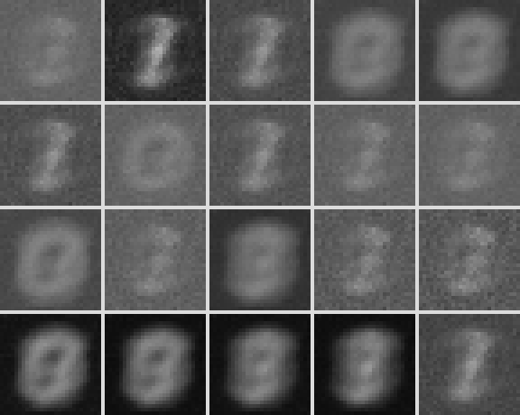
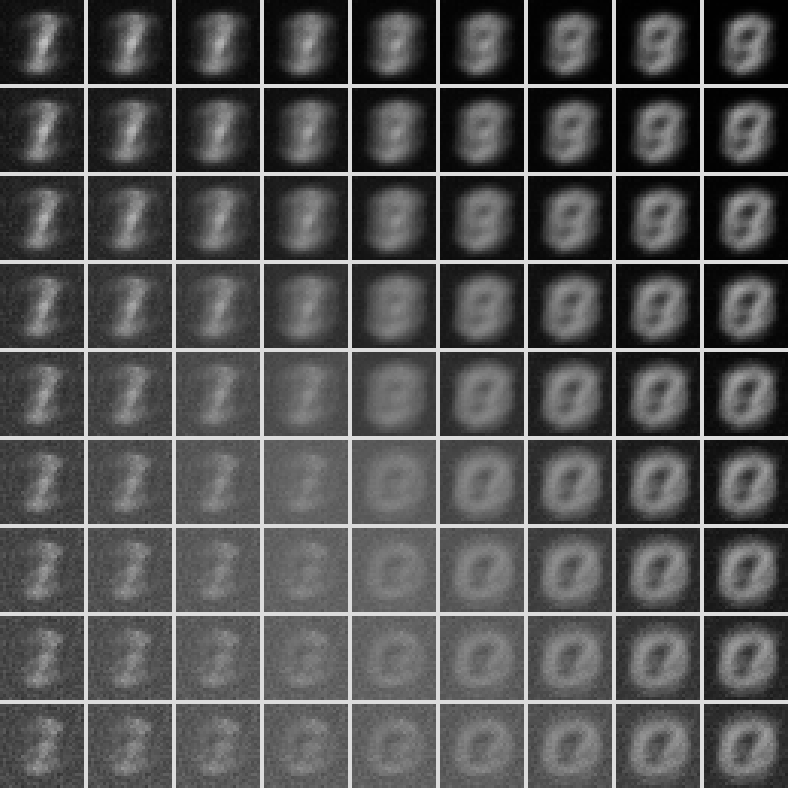

Variational Autoencoder: Explicit Gaussian Codes and a Bernoulli Decoder
Abstract
Generating an image from a code requires a distribution over codes and a decoder that works without its target. This report fits a two-coordinate Gaussian encoder and a Bernoulli decoder on 1,000 statically thresholded MNIST images, using 200 validation and 200 test records. All 96 Adam updates remain editable C++. Four fixed posterior draws select epoch 3; test reconstruction NLL plus analytic KL is 205.507103 nats per image. Decode(mu) pixel MSE is 0.080653, compared with 0.086690 for the fitting-only binary mean. Pathwise checks, unfiltered images and a code-only decoder explain what this short teaching run establishes.
A distribution over codes, then an image distribution given a code
[Kingma and Welling's Auto-Encoding Variational Bayes](https://arxiv.org/abs/1312.6114) uses a tractable approximate posterior and reparameterized samples to optimize a variational objective. The encoder here maps 784 binary pixels through 64 ReLU units to two means and two log variances. Explicit standard-normal epsilon gives z=mu+exp(log_variance/2)*epsilon. The decoder maps z through 64 ReLU units to 784 Bernoulli logits. No pixels bypass the code. Independent standard-normal prior codes use exactly the same decoder.
#include <dm/dm.hpp>
int main() {
std::filesystem::create_directories("build");
dm::graphics::Diagram d(47, 1100);
dm::graphics::DiagramNodeStyle st;
st.width = 5.2;
st.height = 2.7;
st.font_size = 20;
d.node("x", {0, 0}, "Binary image x\n784 pixels", st)
.node("e", {7, 0}, "Encoder\nReLU64 / mu2, logv2", st)
.node("z", {14, 0}, "Posterior code z\nExplicit epsilon2", st)
.node("g", {21, 0}, "Shared decoder\nReLU64 / logits784", st)
.node("o", {28, 0}, "Bernoulli probabilities\nsigmoid(logits)", st)
.node("p", {14, 6}, "Independent prior code\nN(0,I), width2", st)
.node("gp", {21, 6}, "SAME decoder\nCode-only generation", st)
.node("k", {7, -6}, "Analytic KL\nq(z|x) to N(0,I)", st)
.edge("x", "e")
.edge("e", "z")
.edge("z", "g")
.edge("g", "o")
.edge("p", "gp")
.edge("e", "k")
.text(
{14, -10},
"One explicit loss: batch mean of pixel NLL plus Gaussian KL.\nDecoder weights are "
"shared; no image or label enters prior decoding.",
20)
.save_svg("build/vanilla_vae_method.svg");
}
For p(z)=N(0,I) and q(z|x)=N(mu,diag(exp(l))), Jensen's inequality gives log p(x) >= E_qlog p(x - KL(q||p). The Bernoulli decoder and diagonal Gaussian make the per-image terms explicit:
This is the native BetaVariationalAutoencoder with beta=1, feature width 784, latent width 2 and hidden width 64. There is no KL annealing. The finite Monte Carlo negative ELBO estimate is not an exact image log likelihood or an importance-weighted objective, and each realized sample need not bound the likelihood. Dense forward work is O(BH(F+L)); weights are point estimates and the posterior is diagonal. The core owns the math, while the caller owns noise, batches, checkpoint selection and optimizer steps.
Verify the pathwise derivatives before fitting
A controlled two-row example checks every mean, log-variance and epsilon derivative of mean_b[0.5 sum_d z_bd^2+K_b]. With B=2, these derivatives are (z+mu)/2, [0.5 z sigma epsilon+0.5(exp(l)-1)]/2 and z sigma/2, respectively. The two lines below vary epsilon at fixed mu=0.2 and sigma=1 or 2; they are a controlled sampling illustration, rather than fitted decoder predictions.
#include <dm/dm.hpp>
int main() {
namespace n = dm::nn;
const std::vector<double> m{.2, -.4, .1, .3}, l{0, std::log(4.), std::log(.25), .2},
e{1, -.5, 2, -1};
auto mu = n::from_vector(m, {2, 2}).requires_grad_(),
lv = n::from_vector(l, {2, 2}).requires_grad_(),
eps = n::from_vector(e, {2, 2}).requires_grad_();
const auto z = n::models::GaussianReparameterize(mu, lv, eps);
const auto loss = n::mean(.5 * n::sum(n::square(z), {1}) + n::models::DiagonalGaussianKl(mu, lv));
const auto g = n::grad(loss, {mu, lv, eps});
const auto values = z.to_vector<double>();
std::print(
"| coordinate | sampled z | d mean | d log variance | d epsilon "
"|\n|---:|---:|---:|---:|---:|\n");
for (int i = 0; i < 4; ++i) {
const double sigma = std::exp(l[i] / 2), v = m[i] + sigma * e[i];
const std::vector<double> expected{
(v + m[i]) / 2, (.5 * v * sigma * e[i] + .5 * (std::exp(l[i]) - 1)) / 2, v * sigma / 2};
if (std::abs(values[i] - v) > 1e-14)
return 1;
for (int k = 0; k < 3; ++k)
if (std::abs(g[k].to_vector<double>()[i] - expected[k]) > 1e-14)
return 1;
std::print(
"| {} | {:.6f} | {:.6f} | {:.6f} | {:.6f} |\n",
i,
values[i],
g[0].to_vector<double>()[i],
g[1].to_vector<double>()[i],
g[2].to_vector<double>()[i]);
}
const auto extreme = n::models::BernoulliPixelNll(
n::tensor({{100., -100., 100., -100.}}), n::tensor({{1., 0., 0., 1.}}));
if (std::abs(extreme.item() - 200) > 1e-12 ||
n::models::DiagonalGaussianKl(n::zeros({1, 2}), n::zeros({1, 2})).item() != 0)
return 1;
auto chart = dm::graphics::RPlot::create();
std::vector<double> noise;
for (int i = 0; i <= 40; ++i)
noise.push_back(-2. + i * .1);
for (int k = 0; k < 2; ++k) {
const double sigma = k == 0 ? 1 : 2;
const auto output = n::models::GaussianReparameterize(
n::full({41, 1}, .2, n::DType::Float64),
n::full({41, 1}, 2 * std::log(sigma), n::DType::Float64),
n::from_vector(noise, {41, 1}));
chart.lines(
noise,
output.to_vector<double>(),
k == 0 ? "sigma 1" : "sigma 2",
k == 0 ? dm::RGBA{37, 99, 235} : dm::RGBA{220, 38, 38},
2);
}
chart.title("Controlled reparameterization / mu = 0.2")
.x_label("explicit epsilon")
.y_label("sampled latent coordinate")
.save_svg("build/vanilla_vae_pathwise.svg");
}| coordinate | sampled z | d mean | d log variance | d epsilon |
|---|---|---|---|---|
| 0 | 1.200000 | 0.700000 | 0.300000 | 0.600000 |
| 1 | -1.400000 | -0.900000 | 1.100000 | -1.400000 |
| 2 | 1.100000 | 0.600000 | 0.087500 | 0.275000 |
| 3 | -0.805171 | -0.252585 | 0.277814 | -0.444926 |

Native data preparation and the complete experiment
The native mnist-assets task supplies label-balanced 1,000/200/200 fit/validation/test pools and source manifests. Fit and validation are disjoint records of the training IDX file; test IDs address the separate official test IDX file. Images are thresholded once at normalized intensity >=0.5, equivalent to raw uint8 >=128. These tiny pools and this static threshold do not constitute the official binarized-MNIST benchmark protocol. Labels only choose diagnostic gallery rows and colour the latent scatter; they never enter fitting.
#include <dm/dm.hpp>
int main() {
namespace n = dm::nn;
const std::filesystem::path cache = dm::datasets::data_home();
dm::datasets::prepare_example_data("mnist-assets", cache.string());
const auto pools = n::models::LoadSaliency(cache / "saliency");
std::print("| pool | records | geometry | binary foreground fraction |\n|---|---:|---|---:|\n");
for (int k = 0; k < 3; ++k) {
const auto x = n::cast(n::greater_equal(pools[k].images, .5), n::DType::Float64);
std::print(
"| {} | {} | 28x28x1 | {:.6f} |\n",
k == 0 ? "fit"
: k == 1 ? "validation"
: "test",
x.size(0),
n::mean(x).item());
}
}| pool | records | geometry | binary foreground fraction |
|---|---|---|---|
| fit | 1000 | 28x28x1 | 0.134615 |
| validation | 200 | 28x28x1 | 0.128540 |
| test | 200 | 28x28x1 | 0.136684 |
ParameterStore seed 1951 creates ten leaves and 101,652 scalars: 50,500 encoder and 51,152 decoder parameters. BatchOrder(1000,32,1957) gives 32 batches per epoch, including an eight-row last batch. Three epochs make *96 Adam steps*, at rate 0.003 with moments 0.9/0.999 and epsilon 1e-8. Fresh epoch noise uses seeds 1974–1976; fixed four-draw validation/test/fit banks use 1987/1989/1991. Float64 MT19937/Box–Muller draws and their Float32 casts are saved.
Every completed epoch 1–3 is eligible. Selection minimizes fixed four-draw validation pixel NLL plus analytic KL, with KL counted once. A fresh model restores the selected checkpoint; this is model restore rather than optimizer-state resume. The adapters below package checkpoints, metadata and outputs. The actual forward, loss, differentiation and Adam step remain visible in the complete program.
#include <dm/dm.hpp>
namespace nn = dm::nn;
namespace ae {
using SaliencyData = nn::models::SaliencyData;
void Require(bool condition, const std::string& why) {
if (!condition)
throw std::runtime_error(why);
}
void Near(double a, double b, double tolerance, const std::string& why) {
Require(std::abs(a - b) <= tolerance, why);
}
nn::Tensor Flatten(const nn::Tensor& x) {
return x.reshape({x.size(0), 784});
}
std::vector<SaliencyData> LoadSaliency(const std::filesystem::path& root) {
return nn::models::LoadSaliency(root);
}
SaliencyData Rows(const SaliencyData& data, const std::vector<std::int64_t>& rows) {
return {
nn::take_rows(data.images, rows),
nn::take_rows(data.labels, rows),
nn::take_rows(data.source, rows)};
}
void CopyManifests(const std::filesystem::path& data, const std::filesystem::path& root) {
const auto options = std::filesystem::copy_options::overwrite_existing;
if (std::filesystem::exists(data / "manifest.json"))
std::filesystem::copy_file(data / "manifest.json", root / "data_manifest.json", options);
const auto source = data.parent_path() / "autoencoder/source_manifest.json";
if (std::filesystem::exists(source))
std::filesystem::copy_file(source, root / "source_manifest.json", options);
}
nn::NamedTensors Arrays(const nn::ParameterStore& p) {
nn::NamedTensors out;
for (const auto& name : p.names())
out.emplace_back(name, p.at(name).detach().clone());
return out;
}
auto Snapshot(const nn::ParameterStore& p) {
return p.flatten();
}
nn::Tensor Find(const nn::NamedTensors& data, const std::string& name) {
for (const auto& [key, value] : data)
if (key == name)
return value;
throw std::runtime_error(name);
}
double MaxAbsDiff(const nn::Tensor& a, const nn::Tensor& b, std::int64_t count) {
return nn::max(nn::abs(nn::slice_axis(Flatten(a), 0, 0, 1) - nn::slice_axis(Flatten(b), 0, 0, 1)))
.item();
}
double Mse(const nn::Tensor& a, const nn::Tensor& b) {
return nn::mean(
nn::square(
nn::cast(Flatten(a), nn::DType::Float64) -
nn::cast(Flatten(b), nn::DType::Float64)))
.item();
}
nn::Tensor PixelMean(const nn::Tensor& image) {
return nn::cast(nn::mean(nn::cast(Flatten(image), nn::DType::Float64), {0}), nn::DType::Float32);
}
nn::Tensor Constant(const nn::Tensor& row, std::int64_t n) {
return nn::broadcast_to(row.reshape({1, 784}), {n, 784}).contiguous();
}
struct VaeNoiseBank {
nn::Tensor standard, epsilon;
};
VaeNoiseBank VaeNoise(std::int64_t n, std::int64_t samples, std::uint32_t seed) {
auto standard = nn::models::GaussianNoise({n, 2}, samples, seed);
return {standard, nn::cast(standard, nn::DType::Float32).contiguous()};
}
nn::Tensor VaeNoiseAt(const VaeNoiseBank& bank, std::int64_t k) {
return nn::select(bank.epsilon, 0, k).contiguous();
}
nn::models::GaussianVaeOutput
Forward(nn::ParameterStore& p, const nn::Tensor& image, const nn::Tensor& noise) {
return nn::models::BetaVariationalAutoencoder(p, Flatten(image), noise, 1, 784, 2, 64);
}
void Warm(nn::ParameterStore& p) {
nn::NoGradGuard guard;
Forward(p, nn::zeros({1, 784}), nn::zeros({1, 2}));
}
std::vector<nn::Tensor>
Evaluate(nn::ParameterStore& p, const nn::Tensor& image, const nn::Tensor& noise) {
nn::NoGradGuard guard;
const auto out = Forward(p, image, noise);
std::vector<nn::Tensor> fields{
out.mu, out.log_variance, out.z, out.probability, out.reconstruction_nll, out.kl, out.loss};
for (auto& value : fields) {
value = value.contiguous();
for (double v : value.to_vector<double>())
Require(std::isfinite(v), "all posterior/decoder/objective values finite");
}
return fields;
}
nn::Tensor Decode(nn::ParameterStore& p, const nn::Tensor& code) {
nn::NoGradGuard guard;
return nn::sigmoid(nn::models::GaussianVaeDecode(p, code, 784, 2, 64));
}
std::vector<double>
VaeScore(nn::ParameterStore& p, const nn::Tensor& images, const VaeNoiseBank& bank) {
double nll = 0, kl = 0;
const auto samples = bank.epsilon.size(0), n = images.size(0);
for (std::int64_t k = 0; k < samples; ++k) {
const auto fields = Evaluate(p, images, VaeNoiseAt(bank, k));
nll += nn::sum(nn::cast(fields[4], nn::DType::Float64)).item();
if (k == 0)
kl = nn::sum(nn::cast(fields[5], nn::DType::Float64)).item();
}
nll /= double(n * samples);
kl /= double(n);
return {nll, kl, nll + kl};
}
nn::NamedTensors CheckGradients(
const nn::ParameterStore& p,
const std::vector<nn::Tensor>& gradients,
const std::string& finite,
const std::string& nonzero) {
Require(gradients.size() == p.size(), "all ten gradient leaves");
nn::NamedTensors out;
const auto names = p.names();
for (std::size_t k = 0; k < gradients.size(); ++k) {
double norm = 0;
for (double value : gradients[k].to_vector<double>()) {
Require(std::isfinite(value), finite);
norm += value * value;
}
Require(norm > 0, nonzero);
out.emplace_back(names[k], gradients[k]);
}
return out;
}
} // namespace ae
namespace check {
using ae::Near;
using ae::Require;
} // namespace check
namespace {
namespace nn = datamunge::nn;
void Checks() {
const std::vector<float> m{.2f, -.4f, .1f, .3f},
l{0.f, float(std::log(4.)), float(std::log(.25)), .2f}, e{1.f, -.5f, 2.f, -1.f};
auto mu = nn::from_vector(m, {2, 2}).requires_grad_(),
lv = nn::from_vector(l, {2, 2}).requires_grad_(),
eps = nn::from_vector(e, {2, 2}).requires_grad_();
auto z = nn::models::GaussianReparameterize(mu, lv, eps),
kl = nn::models::DiagonalGaussianKl(mu, lv);
auto loss = nn::mean(0.5 * nn::sum(nn::square(z), {1}) + kl, {0});
auto grad = nn::grad(loss, {mu, lv, eps});
auto extreme = nn::models::BernoulliPixelNll(
nn::tensor({{100., -100., 100., -100.}}), nn::tensor({{1., 0., 0., 1.}}));
auto zero_kl = nn::models::DiagonalGaussianKl(nn::zeros({1, 2}), nn::zeros({1, 2}));
const auto zs = z.to_vector<float>(), kls = kl.to_vector<float>(),
g0 = grad[0].to_vector<float>(), g1 = grad[1].to_vector<float>(),
g2 = grad[2].to_vector<float>();
for (int b = 0; b < 2; ++b) {
double k = 0;
for (int j = 0; j < 2; ++j) {
const int i = b * 2 + j;
const double mean = m[i], logv = l[i], noise = e[i], sigma = std::exp(.5 * logv),
value = mean + sigma * noise;
k += .5 * (mean * mean + std::exp(logv) - 1 - logv);
check::Near(zs[i], value, 2e-7, "all4reparameterized values");
check::Near(g0[i], (value + mean) / 2, 2e-7, "all4mu derivatives include pathwise PLUS KL");
check::Near(
g1[i],
(.5 * value * sigma * noise + .5 * (std::exp(logv) - 1)) / 2,
3e-7,
"all4logvariance derivatives include pathwise PLUS KL");
check::Near(g2[i], value * sigma / 2, 3e-7, "all4epsilon derivatives follow sigma");
}
check::Near(kls[b], k, 2e-7, "all2analytic Gaussian KLs");
}
check::Near(extreme.at({0}), 200, 1e-6, "stable BCE for logits+-100");
check::Near(zero_kl.at({0}), 0, 0, "q=N(0,I)KL exactly0");
std::cout << "known4pathwise values/2KL/ALL12mu-logvariance-epsilon "
"derivatives/zeroKL/extremeBCE passed\n";
}
void Run(
const std::filesystem::path& data,
const std::filesystem::path& root,
int epochs,
const std::string& init) {
auto pools = ae::LoadSaliency(data);
std::filesystem::create_directories(root);
nn::NamedTensors saved_data;
for (int split = 0; split < 3; ++split) {
const std::string name = split == 0 ? "fit" : split == 1 ? "validation" : "test";
saved_data.emplace_back(name + "_original_images", pools[split].images);
pools[split].images =
nn::cast(nn::greater_equal(pools[split].images, .5), nn::DType::Float32).contiguous();
saved_data.emplace_back(name + "_images", pools[split].images);
saved_data.emplace_back(name + "_source_ids", pools[split].source);
}
saved_data.emplace_back("test_labels", pools[2].labels);
nn::save_npz((root / "data.npz").string(), saved_data);
ae::CopyManifests(data, root);
auto val_noise = ae::VaeNoise(200, 4, 1987), test_noise = ae::VaeNoise(200, 4, 1989),
fit_noise = ae::VaeNoise(1000, 4, 1991);
nn::save_npz(
(root / "fixed_noise.npz").string(),
{{"validation_standard", val_noise.standard},
{"validation_epsilon", val_noise.epsilon},
{"test_standard", test_noise.standard},
{"test_epsilon", test_noise.epsilon},
{"fit_standard", fit_noise.standard},
{"fit_epsilon", fit_noise.epsilon}});
nn::ParameterStore model(1951);
ae::Warm(model);
nn::OptimizerConfig config;
config.kind = nn::OptimizerKind::Adam;
nn::Optimizer optimizer(model, .003, config);
if (!init.empty())
model.load(init);
check::Require(
model.size() == 10 && model.count() == 101652, "twohead diagonalGaussian parameter census");
nn::save_npz((root / "initial_arrays.npz").string(), ae::Arrays(model));
auto initial = ae::VaeScore(model, pools[2].images, test_noise);
nn::BatchOrder order(1000, 32, 1957);
std::ofstream history(root / "history.tsv"), batches(root / "batches.tsv");
history.precision(17);
history << "epoch\tfit_preupdate_negative_elbo\tvalidation_reconstruction_nll\tvalidation_"
"kl\tvalidation_"
"negative_elbo\n";
batches << "epoch\tstep\trow\tsource_id\n";
const auto fit_source = pools[0].source.to_vector<int>();
const auto best_path = (root / "best.npz").string();
double best = std::numeric_limits<double>::infinity();
int selected = 0, step = 0;
const auto started = std::chrono::steady_clock::now();
for (int epoch = 1; epoch <= epochs; ++epoch) {
auto noise = ae::VaeNoise(1000, 1, 1973 + epoch); // fresh explicit epsilon every epoch
nn::save_npz(
(root / ("train_noise_epoch" + std::to_string(epoch) + ".npz")).string(),
{{"standard", noise.standard}, {"epsilon", noise.epsilon}});
auto epsilon = ae::VaeNoiseAt(noise, 0);
order.begin_epoch();
double sum = 0;
int seen = 0;
for (;;) {
auto rows = order.next();
if (rows.empty())
break;
auto input = nn::take_rows(pools[0].images, rows), e = nn::take_rows(epsilon, rows);
if (step == 0) {
auto g = ae::CheckGradients(
model,
nn::grad(ae::Forward(model, input, e).loss, model.parameters()),
"all posterior/decoder negativeELBO derivatives finite",
"ALL10posterior/decoder tensors receive gradients");
nn::save_npz((root / "first_gradients.npz").string(), g);
nn::save_npz((root / "first_batch.npz").string(), {{"images", input}, {"epsilon", e}});
}
// Explicit posterior/decoder forward, negative ELBO, all-ten-leaf reverse mode, Adam.
const auto forward =
nn::models::BetaVariationalAutoencoder(model, ae::Flatten(input), e, 1, 784, 2, 64);
const double loss = forward.loss.item<float>();
check::Require(std::isfinite(loss) && loss >= 0, "finite negative ELBO");
sum += double(rows.size()) * loss;
const auto gradients = nn::grad(forward.loss, model.parameters());
optimizer.step(gradients);
seen += int(rows.size());
for (auto row : rows)
batches << epoch << '\t' << step << '\t' << row << '\t' << fit_source[row] << '\n';
if (step == 0)
nn::save_npz((root / "first_update_arrays.npz").string(), ae::Arrays(model));
++step;
}
check::Require(seen == 1000, "allfittingrecords once per epoch");
auto score = ae::VaeScore(model, pools[1].images, val_noise);
history << epoch << '\t' << sum / seen << '\t' << score[0] << '\t' << score[1] << '\t'
<< score[2] << '\n';
nn::save_npz(
(root / ("epoch" + std::to_string(epoch) + "_arrays.npz")).string(), ae::Arrays(model));
if (score[2] < best) {
best = score[2];
selected = epoch;
model.save(best_path); // fixed four-sample validation negative ELBO selects the epoch
}
}
const double train_seconds =
std::chrono::duration<double>(std::chrono::steady_clock::now() - started).count();
nn::ParameterStore deployed(1951);
ae::Warm(deployed);
deployed.load(best_path); // fresh posterior/prior inference restore
const auto before = ae::Snapshot(deployed);
check::Near(
ae::VaeScore(deployed, pools[1].images, val_noise)[2],
best,
1e-8,
"fresh selected MC validation objective");
nn::NamedTensors output;
std::vector<ae::VaeNoiseBank> banks{fit_noise, val_noise, test_noise};
for (int split = 0; split < 3; ++split) {
const std::string name = split == 0 ? "fit" : split == 1 ? "validation" : "test";
const std::int64_t n = pools[split].images.size(0);
auto mean = ae::Evaluate(deployed, pools[split].images, nn::zeros({n, 2}));
check::Require(nn::equal_bits(mean[2], mean[0]), "epsilon0 means z=mu EXACT");
std::vector<nn::Tensor> sample_z, prediction, nll;
for (int k = 0; k < 4; ++k) {
auto draw = ae::Evaluate(deployed, pools[split].images, ae::VaeNoiseAt(banks[split], k));
check::Require(
nn::equal_bits(draw[0], mean[0]) && nn::equal_bits(draw[1], mean[1]),
"epsilon changes samples not posterior parameters");
sample_z.push_back(draw[2]);
prediction.push_back(draw[3]);
nll.push_back(draw[4]);
}
output.emplace_back(name + "_mu", mean[0]);
output.emplace_back(name + "_log_variance", mean[1]);
output.emplace_back(name + "_mean_reconstruction", mean[3]);
output.emplace_back(name + "_kl", mean[5]);
output.emplace_back(name + "_sample_z", nn::stack(sample_z, 0));
output.emplace_back(name + "_sample_prediction", nn::stack(prediction, 0));
output.emplace_back(name + "_sample_nll", nn::stack(nll, 0));
}
auto test = ae::Evaluate(deployed, pools[2].images, ae::VaeNoiseAt(test_noise, 0)),
repeat = ae::Evaluate(deployed, pools[2].images, ae::VaeNoiseAt(test_noise, 0));
check::Require(
nn::equal_bits(test[2], repeat[2]) && nn::equal_bits(test[3], repeat[3]) &&
nn::equal_bits(ae::Decode(deployed, test[2]), test[3]),
"fixed epsilon repeatability and target-free exact sampled decode");
auto other = ae::Evaluate(deployed, pools[2].images, ae::VaeNoiseAt(test_noise, 1));
check::Require(
!nn::equal_bits(test[2], other[2]) && !nn::equal_bits(test[3], other[3]),
"second epsilon changes latent samples AND decoder probabilities");
auto single = ae::Evaluate(
deployed, ae::Rows(pools[2], {0}).images, nn::take_rows(ae::VaeNoiseAt(test_noise, 0), {0}));
const double parity = ae::MaxAbsDiff(single[3], test[3], 784);
check::Require(parity < 2e-6, "posterior single/batch parity");
auto zero_latent = ae::Decode(deployed, nn::zeros({200, 2}));
output.emplace_back("zero_latent_prediction", zero_latent);
auto prior_noise = ae::VaeNoise(20, 1, 1997);
auto prior_z = ae::VaeNoiseAt(prior_noise, 0), prior = ae::Decode(deployed, prior_z);
std::vector<float> grid_values;
for (int row = 0; row < 9; ++row)
for (int col = 0; col < 9; ++col) {
grid_values.push_back(-2.f + .5f * col);
grid_values.push_back(2.f - .5f * row);
}
auto grid_z = nn::from_vector(grid_values, {81, 2});
auto grid = ae::Decode(deployed, grid_z);
nn::save_npz(
(root / "prior.npz").string(),
{{"standard", prior_noise.standard},
{"z", prior_z},
{"probability", prior},
{"grid_z", grid_z},
{"grid_probability", grid}});
check::Require(
before == ae::Snapshot(deployed),
"posterior evaluation/prior generation leaves ALL10parameters immutable");
nn::save_npz((root / "outputs.npz").string(), output);
nn::save_npz((root / "model_arrays.npz").string(), ae::Arrays(deployed));
auto score = ae::VaeScore(deployed, pools[2].images, test_noise);
const auto mean_rec = ae::Find(output, "test_mean_reconstruction");
const double mean_mse = ae::Mse(mean_rec, pools[2].images);
std::ofstream meta(root / "metrics.json");
meta.precision(17);
meta << "{\"parameters\":101652,\"epochs\":" << epochs << ",\"updates\":" << step
<< ",\"selected_epoch\":" << selected
<< ",\"mc_samples\":4,\"initial_test_negative_elbo\":" << initial[2]
<< ",\"test_reconstruction_nll\":" << score[0] << ",\"test_kl\":" << score[1]
<< ",\"test_negative_elbo\":" << score[2] << ",\"mean_decode_test_mse\":" << mean_mse
<< ",\"single_batch_max_error\":" << parity << "}\n";
auto fit_mean = ae::Constant(ae::PixelMean(pools[0].images), 200);
check::Require(bool(meta) && bool(history) && bool(batches), "complete vanilla VAE evidence");
std::print(
"| selected epoch | test pixel NLL | KL | negative ELBO | decode(mu) MSE | fit-only binary "
"mean MSE |\n|---:|---:|---:|---:|---:|---:|\n| {} | {:.9f} | {:.9f} | {:.9f} | {:.9f} | "
"{:.9f} |\n",
selected,
score[0],
score[1],
score[2],
mean_mse,
ae::Mse(fit_mean, pools[2].images));
}
} // namespace
int main() {
try {
Checks();
const std::filesystem::path cache = dm::datasets::data_home();
dm::datasets::prepare_example_data("mnist-assets", cache.string());
Run(cache / "saliency", "build/vanilla_vae", 3, "");
return 0;
} catch (const std::exception& e) {
std::cerr << e.what() << '\n';
return 1;
}
}known4pathwise values/2KL/ALL12mu-logvariance-epsilon derivatives/zeroKL/extremeBCE passed
| selected epoch | test pixel NLL | KL | negative ELBO | decode(mu) MSE | fit-only binary mean MSE |
|---|---|---|---|---|---|
| 3 | 196.893673820 | 8.613429453 | 205.507103273 | 0.080653337 | 0.086689513 |
All 16 archives, 8,817,594 array values, complete batch history and CSV/TSV files reproduce the original source exactly. The report replaces one host MSE sum with a tensor Float64 reduction: mean_decode_test_mse differs by 2.998e-15. All other non-timing JSON values remain exact. Fixed-noise repeats, single/batch inference, target-free decoder equality and parameter immutability are checked before saving results.
Validation measures a completed epoch
The training trace is a record-weighted mean of pre-update minibatch objectives, each with its own current parameters and one noise draw. Validation uses the completed epoch's fixed parameters and four fixed draws. Their separation therefore does not by itself diagnose an overfitting gap.
#include <dm/dm.hpp>
int main() {
std::ifstream input("build/vanilla_vae/history.tsv");
std::string header;
std::getline(input, header);
std::vector<double> epochs, train, validation;
double e, t, n, k, v;
while (input >> e >> t >> n >> k >> v) {
epochs.push_back(e);
train.push_back(t);
validation.push_back(v);
}
if (epochs.size() != 3)
return 1;
auto chart = dm::graphics::RPlot::create();
chart.lines(epochs, train, "train (pre)", dm::RGBA{37, 99, 235}, 2)
.points(epochs, train, "", dm::RGBA{37, 99, 235}, 5)
.lines(epochs, validation, "validation (end)", dm::RGBA{220, 38, 38}, 2)
.points(epochs, validation, "", dm::RGBA{220, 38, 38}, 5)
.title("Negative ELBO estimates / distinct observation times")
.x_label("completed epoch / all three eligible")
.y_label("NLL plus KL / nats per image")
.x_ticks({1, 2, 3}, {"1", "2", "3"})
.save_svg("build/vanilla_vae_validation.svg");
}
Held-out reconstructions and the posterior means
Each row below shows binary target, decode(mu), posterior draw 0, posterior draw 1, fitting-only binary mean, absolute decode(mu) error and zero-code decode. The first test record for each digit is displayed, regardless of quality. Decode(mu) is not the posterior predictive mean. All decoder images are Bernoulli probabilities rather than sampled binary pixels; the shared 0–1 grayscale is fixed across columns. MSE improves modestly over the fitting-only mean, but it is neither the fitted objective nor a perceptual-quality measurement.
#include <dm/dm.hpp>
int main() {
namespace n = dm::nn;
const auto data = n::load_npz("build/vanilla_vae/data.npz"),
out = n::load_npz("build/vanilla_vae/outputs.npz");
auto find = [](const n::NamedTensors& a, const std::string& name) {
for (const auto& [key, value] : a)
if (key == name)
return value;
throw std::runtime_error(name);
};
const auto x = find(data, "test_images").reshape({200, 784}),
rec = find(out, "test_mean_reconstruction"),
draws = find(out, "test_sample_prediction");
const auto mean = n::cast(
n::mean(n::cast(find(data, "fit_images").reshape({1000, 784}), n::DType::Float64), {0}),
n::DType::Float32);
const std::vector<n::Tensor> values{
x,
rec,
n::select(draws, 0, 0),
n::select(draws, 0, 1),
n::broadcast_to(mean.reshape({1, 784}), {200, 784}),
n::abs(rec - x),
find(out, "zero_latent_prediction")};
const auto labels = find(data, "test_labels").to_vector<int>(),
ids = find(data, "test_source_ids").to_vector<int>();
std::vector<n::Tensor> gallery;
std::print("| digit | official-test source ID |\n|---:|---:|\n");
for (int digit = 0; digit < 10; ++digit) {
const auto it = std::find(labels.begin(), labels.end(), digit);
if (it == labels.end())
return 1;
const auto row = std::distance(labels.begin(), it);
std::print("| {} | {} |\n", digit, ids[row]);
for (const auto& v : values)
gallery.push_back(n::take_rows(v, {row}));
}
n::save_image_grid(
n::concat(gallery, 0).reshape({70, 28, 28, 1}),
"build/vanilla_vae_reconstructions.png",
7,
0,
1,
4,
220. / 255.,
3);
}| digit | official-test source ID |
|---|---|
| 0 | 66921 |
| 1 | 63380 |
| 2 | 68936 |
| 3 | 62280 |
| 4 | 62094 |
| 5 | 65222 |
| 6 | 61209 |
| 7 | 61721 |
| 8 | 69402 |
| 9 | 62570 |

The next scatter uses all 200 test posterior means. Held-out digit colours are diagnostic annotations only. It omits posterior uncertainty, and two visible coordinates do not establish semantic axes, disentanglement or a faithful embedding of all image variation.
#include <dm/dm.hpp>
int main() {
namespace n = dm::nn;
auto a = n::load_npz("build/vanilla_vae/outputs.npz"),
data = n::load_npz("build/vanilla_vae/data.npz");
auto find = [](const n::NamedTensors& a, const std::string& name) {
for (const auto& [key, value] : a)
if (key == name)
return value;
throw std::runtime_error(name);
};
const auto mu = find(a, "test_mu").to_vector<float>();
const auto labels = find(data, "test_labels").to_vector<int>();
const std::vector<dm::RGBA> colours{
{37, 99, 235},
{220, 38, 38},
{22, 163, 74},
{147, 51, 234},
{234, 88, 12},
{8, 145, 178},
{190, 24, 93},
{101, 163, 13},
{120, 53, 15},
{75, 85, 99}};
auto chart = dm::graphics::RPlot::create();
double lo = 1e9, hi = -1e9;
for (int digit = 0; digit < 10; ++digit) {
std::vector<double> x, y;
for (int row = 0; row < 200; ++row)
if (labels[row] == digit) {
x.push_back(mu[2 * row]);
y.push_back(mu[2 * row + 1]);
lo = std::min(lo, double(mu[2 * row]));
hi = std::max(hi, double(mu[2 * row]));
}
chart.points(x, y, std::to_string(digit), colours[digit], 4);
}
chart.title("All held-out posterior means / labels only annotate")
.x_label("mu coordinate 1")
.y_label("mu coordinate 2")
.x_limits(lo - .1 * (hi - lo), hi + .45 * (hi - lo))
.save_svg("build/vanilla_vae_latent.svg");
}
Decode independent prior codes without the encoder
Only the four decoder leaves are restored below. Twenty standard-normal codes from seed 1997 produce exactly the previously saved prior probabilities. No image, encoder or label is needed. All twenty outputs are shown in draw order, without rejection or quality ranking.
#include <dm/dm.hpp>
int main() {
namespace n = dm::nn;
n::NoGradGuard guard;
const auto arrays = n::load_npz("build/vanilla_vae/model_arrays.npz"),
prior = n::load_npz("build/vanilla_vae/prior.npz");
auto find = [](const n::NamedTensors& a, const std::string& name) {
for (const auto& [key, value] : a)
if (key == name)
return value;
throw std::runtime_error(name);
};
n::ParameterStore decoder(1951);
n::models::GaussianVaeDecode(decoder, n::zeros({1, 2}), 784, 2, 64);
for (const auto& name : decoder.names())
decoder.set(name, find(arrays, name));
if (decoder.size() != 4)
return 1;
const auto probability =
n::sigmoid(n::models::GaussianVaeDecode(decoder, find(prior, "z"), 784, 2, 64));
if (!n::equal_bits(probability, find(prior, "probability")))
return 1;
n::save_image_grid(
probability.reshape({20, 28, 28, 1}),
"build/vanilla_vae_priors.png",
5,
0,
1,
4,
220. / 255.,
4);
}
A separate 9×9 grid decodes *Cartesian coordinates*, not Gaussian quantiles: coordinate 1 runs -2 to 2 left to right and coordinate 2 runs 2 to -2 top to bottom, both in steps of 0.5. Equal spatial steps do not represent equal prior probability. This view describes the learned decoder surface and cannot establish semantic coordinate control.
#include <dm/dm.hpp>
int main() {
namespace n = dm::nn;
n::NoGradGuard guard;
const auto arrays = n::load_npz("build/vanilla_vae/model_arrays.npz"),
prior = n::load_npz("build/vanilla_vae/prior.npz");
auto find = [](const n::NamedTensors& a, const std::string& name) {
for (const auto& [key, value] : a)
if (key == name)
return value;
throw std::runtime_error(name);
};
const auto z = find(prior, "grid_z");
for (int r = 0; r < 9; ++r)
for (int c = 0; c < 9; ++c)
if (z.at({r * 9 + c, 0}) != -2. + .5 * c || z.at({r * 9 + c, 1}) != 2. - .5 * r)
return 1;
n::ParameterStore decoder(1951);
n::models::GaussianVaeDecode(decoder, n::zeros({1, 2}), 784, 2, 64);
for (const auto& name : decoder.names())
decoder.set(name, find(arrays, name));
const auto probability = n::sigmoid(n::models::GaussianVaeDecode(decoder, z, 784, 2, 64));
if (!n::equal_bits(probability, find(prior, "grid_probability")))
return 1;
n::save_image_grid(
probability.reshape({81, 28, 28, 1}),
"build/vanilla_vae_grid.png",
9,
0,
1,
4,
220. / 255.,
3);
}
Evidence and limits
The native Gaussian core supplies reparameterization, analytic KL, stable Bernoulli NLL and the full dense model. The old eight-field compatibility record forwards to that same core; its signature stays available for remaining consumers. Source arrays and histories agree exactly, and the independent NumPy development check verifies all 101,652 first derivatives, the bit-exact first Adam step, explicit Gaussian draws, saved forwards, all eligible validation candidates and target-free prior decoding. It never trains or prepares data:
python3 scripts/check_variational_autoencoder.py docs/mepml/nn/2_autoencoders/2.2_variational_autoencoders/build/vanilla_vaeThe run demonstrates a differentiable stochastic bottleneck and reproducible prior decoding. Its small balanced pools, three training epochs and qualitative figures do not establish benchmark likelihood, realistic generation, disentanglement or generalization to other data.